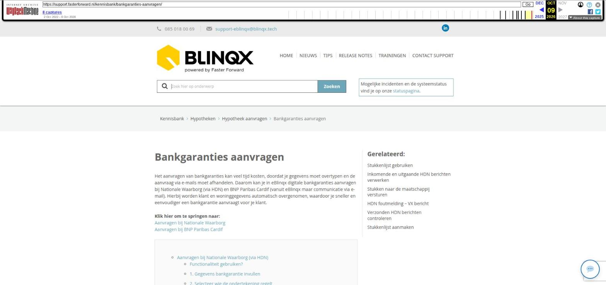

Bankgaranties aanvragen

Tekstinhoud
Bankgaranties aanvragen
Het aanvragen van bankgaranties kan veel tijd kosten, doordat je gegevens moet overtypen en de aanvraag via e-mails moet afhandelen. Daarom kan je in eBlinqx digitale bankgaranties aanvragen bij Nationale Waarborg (via HDN) en BNP Paribas Cardif (vanuit eBlinqx maar communicatie via e-mail). Hierbij worden klant en woninggegevens automatisch overgenomen, waardoor je sneller en eenvoudiger een bankgarantie aanvraagt voor je klant.
Klik hier om te springen naar:
Aanvragen bij Nationale Waarborg
Aanvragen bij BNP Paribas Cardif
Aanvragen bij Nationale Waarborg (via HDN)
Functionaliteit gebruiken?
1. Gegevens bankgarantie invullen
2. Selecteer wie de ondertekening regelt
3. Vul gegevens in
Arrangement Nationale Waarborg
Meldingen notaris
4. Nationale Waarborg reageert op aanvraag
Berichten bekijken in klantdossier
5. Consument geeft akkoord op aanvraag
Digimap
Klantportaal
6. Benodigde documenten aanleveren
7. Handel de aanvraag af
Bestaand aanvraagbericht bankgarantie wijzigen, corrigeren of verlengen
Wijzigen initiële aanvraag
Correctie na stellen
Verlengen na stellen
Aanvragen bij BNP Paribas Cardif
Hoe bankgaranties aanvragen?
1. Gegevens bankgarantie invullen en aanvraag versturen vanuit eBlinqx
Dekking Beschermd + toe te voegen
Hoofdsom anders dan aankoopsom?
Bankgarantie versturen naar klant
Aankoopsom in tabblad Wonen
2. Klant geeft akkoord in Digimap of in Klantportaal
Digimap
Goedgekeurd
Afgekeurd
Klantportaal
3. De aanvraag wordt afgehandeld
Digimap
Klantportaal
Aanvragen bij Nationale Waarborg (via HDN)
Functionaliteit gebruiken?
Als je bankgaranties wilt aanvragen vanuit eBlinqx, meld je dan aan bij Nationale Waarborg via sales@nationalewaarborg.nl. Nationale Waarborg neemt dan contact met je op om afspraken te maken en een overeenkomst op te stellen.
Voor- en achternaam
Je e-mailadres
Telefoonnummer (optioneel)
Wanneer de overeenkomst met Nationale Waarborg is vastgelegd, geeft Nationale Waarborg ons een seintje en kunnen wij de koppeling verder inrichten in eBlinqx. Nadat dit is gebeurd, kan je starten met het aanvragen van bankgaranties via eBlinqx.
1. Gegevens bankgarantie invullen
Ga in een klantdossier naar een hypotheek en vervolgens naar het tabblad 'Bankgarantie'. Klik hier op 'Bankgarantie aanvragen'. Kies hier voor 'Nationale Waarborg'.
2. Selecteer wie de ondertekening regelt
Het aanvragen van bankgaranties bij Nationale Waarborg kan op twee manieren:
Afhandeling door de adviseur, waarbij de klant ondertekent in de Digimap of Klantportaal
Afhandeling door Nationale Waarborg, waarbij zij het digitaal ondertekenen regelen met de klant
Afhankelijk van jouw gewenste inrichting en keuze kan het ondertekenen van de aanvraag volledig digitaal via Nationale Waarborg verlopen. In dat geval ondertekent de klant niet in de Digimap of Klantportaal, maar regelt Nationale Waarborg het ondertekenen met de klant.
3. Vul gegevens in
De gegevens die al bekend zijn in het klantdossier in eBlinqx, worden automatisch ingevuld. Veel velden zijn read-only en met een informatie-icoon wordt aangegeven waar de informatie wordt opgehaald. Klopt het niet dan dien je in het dossier het juiste veld aan te passen. Dit zorgt ervoor dat de gegevens in de bankgarantie niet afwijken van de gegevens in het dossier. De meeste gegevens worden opgehaald vanuit het tabblad Wonen onder de hypotheek. De velden worden als volgt opgehaald:
Marktwaarde = meeste recente taxatie op tabblad Wonen onder de hypotheek
Garantiebedrag = het veld 'Bankgarantie' uit de productkaart hypotheek (Bankgarantie benodigd moet op 'Ja' staan)
Bankgarantie kosten = het veld 'Bankgarantie kosten' in het tabblad Wonen onder de hypotheek
Steldatum = bankgarantie steldatum uit de productkaart hypotheek
Kenmerk = door het systeem gegenereerd kenmerk
Kopers = aanvragers uit de productkaart hypotheek
Passeerdatum = passeerdatum uit de productkaart hypotheek
Hoofdsom = hoofdsom uit de productkaart hypotheek
Overbruggingsbedrag = het veld 'Overbruggingsbedrag' vanuit het tabblad Wonen – Financieringsopzet – Overbrugging staat op 'Ja'
Daarnaast gelden een aantal aandachtspunten:
De klantgegevens worden overgenomen van de aanvragers uit de bijbehorende hypotheek. De notaris wordt ook automatisch overgenomen. Als deze niet correct ingevuld zijn dan verschijnt er een melding (zie hieronder)
Wanneer de hoofdsom niet hetzelfde is als de aankoopsom, moet je handmatig het bankgarantiebedrag in het tabblad 'Bankgarantie' aanpassen. De afwijking van de hoofd- en aankoopsom zijn niet zichtbaar in de Digimap en in Klantportaal. Je ziet alleen de hoofdsom.
Staat de voorkeurstaal onder de persoon ingesteld dan wordt deze meegestuurd in het aanvraagbericht bankgarantie (WX-bericht).
Onder de contactpersoon vul je het correspondentieadres in. De klant gebruikt dit correspondentieadres om in te loggen in het portaal voor de bankgarantie. Het standaard correspondentieadres (groen bolletje) wordt hier automatisch gevuld. Is deze niet aanwezig dan is dit het correspondentieadres uit de hypotheek.
Vul de overige gegevens zelf aan. Voor Nationale Waarborg worden daarnaast ook arrangementgegevens automatisch opgehaald.
Arrangement Nationale Waarborg
Wanneer je een bankgarantie aanvraagt bij Nationale Waarborg, worden de beschikbare arrangementen automatisch opgehaald. Via het dropdownmenu selecteer je het juiste arrangement.
Na het selecteren van een arrangement gebeurt het volgende automatisch:
Het veld Verzekerd wordt gevuld met Ja of Nee Staat Verzekerd op Ja, dan worden de verzekeringskosten automatisch meegenomen Voor de vergoeding/korting wordt gecontroleerd of er sprake is van een vrije tussenpersoonvergoeding of vrije organisatievergoeding
Is dit het geval, dan kun je zelf een bedrag invullen
Is dit niet het geval, dan kun je kiezen uit vaste bedragen
Er wordt automatisch een kostenoverzicht toegevoegd met:
garantiekosten
vergoeding/korting
verzekering
verlengingskosten
totale garantiekosten
De arrangementen worden opgehaald via een API-koppeling. Deze komt tot stand middels het TP nummer Nationale Waarborg (die wordt aangeleverd door Nationale Waarborg en ingericht door ons) wat ingesteld moet zijn in Beheer – Organisatie & Personen – kantoor – tabblad Inventarisatie. Wanneer deze koppeling niet (juist) is ingericht, krijg je hiervan een melding . In dat geval kun je het arrangement handmatig invullen. Dit is ook mogelijk wanneer het niet lukt om de arrangementen automatisch op te halen, bijvoorbeeld omdat de verbinding eruit ligt. Ook dan krijg je hiervan een melding:
Als je klaar bent, klik je onderaan op 'Bankgarantie aanvragen'. De aanvraag wordt dan verstuurd naar Nationale Waarborg met een WX bericht via HDN.
Nadat je de bankgarantie hebt aangevraagd, zie je de verstuurde aanvraag terug onder de hypotheek in het tabblad 'Bankgarantie'.
Meldingen notaris
De notaris wordt automatisch ingevuld als deze correct staat ingericht. Correct houdt in het veld Notaris onder Overige in het hypotheekproduct is gevuld en dat onder de geselecteerde notaris een correspondentieadres staat opgevoerd. Is dit niet het geval dan verschijnt er melding. De notaris moet dus ingevuld staan onder het product bij het veld 'Notaris':
En onder de geselecteerde notaris moet een type correspondentieadres opgevoerd staan. Dit kan je controleren door in het dossier naar het tabblad Partijen & Objecten te gaan. Rechts staan dan de notarissen. Hier klik je op de naam van de notaris die gekozen is in het product:
Onder 'Adressen' zie je dan de adressen staan met het type erbij. Eén van deze adressen moet het type 'Correspondentieadres' hebben. Is dit niet het geval dan kan je door middel het plusicoon het adres toevoegen en hierbij aangeven dat het een correspondentieadres betreft.
4. Nationale Waarborg reageert op aanvraag
Zodra Nationale Waarborg de aanvraag heeft bekeken, kunnen ze berichten via HDN terug sturen: de status van de aanvraag (SX bericht), de offerte (OX bericht) en de benodigde documenten (DA bericht).
De garantieopdracht die getekend moet worden door de klant (offerte, OX bericht) ontvang je alleen als je hebt gekozen om de ondertekening niet via Nationale Waarborg te laten lopen. Als de bankgarantie is afgegeven door Nationale Waarborg dan ontvang je een kopie van de officiële garantietekst via een OX bericht.
Berichten komen binnen via HDN in de HDN inbox op je dashboard.
Bij binnenkomst van diverse HDN berichten wordt er een taak aangemaakt. Dit is zichtbaar in het product onder het tabblad HDN door middel van het taakicoon. Er wordt een taak aangemaakt voor de verantwoordelijke van de bankgarantie als:
Offerte binnen komt in de HDN inbox
Offerte wordt toegevoegd aan een stuk van de bankgarantie
De maatschappij stukken afkeurt of stukken opvraagt
Bankgarantie verloopt, is afgewezen, aanvraag ingetrokken of technisch niet te verwerken is (statusbericht in de HDN inbox)
Berichten bekijken in klantdossier
Deze berichten zie je ook terug in het bijbehorende klantdossier in het tabblad HDN – Berichtenverkeer. Klik hier bij product op 'Bankgarantie' om alleen de berichten te zien die over de bankgarantie gaan.
5. Consument geeft akkoord op aanvraag
Als je ervoor gekozen hebt om het ondertekenen niet via Nationale Waarborg te laten verlopen, heb je een offerte ontvangen en kun je deze delen met de consument via de Digimap of Klantportaal. Als het ondertekenen via Nationale Waarborg verloopt, hoef je deze stap niet uit te voeren.
Digimap
In zijn Digimap dient de consument de aanvraag te controleren. Vervolgens kiest de consument voor 'Garantiestelling aanvragen' of 'Garantiestelling afwijzen'.
Klantportaal
Nationale Waarborg heeft via HDN een OX bericht gestuurd met daarin de garantieopdracht. Dit document staat in het klantdossier onder het tabblad Documenten. Via het wijzigingsicoon open je dit document en je geeft aan dat dit document ondertekend moet worden in Klantportaal.
In Klantportaal komt er een ondertekenverzoek. Vanuit daar kan de consument het document ondertekenen. Hier lees je meer over het digitaal ondertekenen in Klantportaal.
6. Benodigde documenten aanleveren
Zoals eerder aangegeven kan Nationale Waarborg ook een DA bericht sturen om de eventueel benodigde documenten op te vragen. Dit komt zeer sporadisch voor, omdat er eigenlijk nooit extra documenten aangeleverd hoeven te worden. Mocht je een DA bericht hebben ontvangen dan wordt de stukkenlijst van de hypotheek uitgebreid. De documenten die benodigd zijn voor de bankgarantie aanvraag, beginnen met 'Bankgarantie'.
Documenten die reeds zijn geüpload in de stukkenlijst van de hypotheek in dit klantdossier, worden automatisch toegevoegd aan de stukkenlijst van de bankgarantie.
Als adviseur dien je de ontbrekende documenten te uploaden in de stukkenlijst. Je kan ook de consument vragen om ontbrekende documenten te uploaden in zijn Digimap of Klantportaal.
7. Handel de aanvraag af
De verdere afhandeling van de bankgarantie gebeurt hetzelfde als het afhandelen van een hypotheekaanvraag. Je ontvangt berichten over de aanvraag in de HDN inbox.
Als de bankgarantie is afgegeven door Nationale Waarborg, ontvang je een OX bericht met een kopie van de officiële garantietekst.
Bestaand aanvraagbericht bankgarantie wijzigen, corrigeren of verlengen
Het is mogelijk om een bestaande aanvraag te wijzigen, corrigeren en te verlengen. Hier zitten wel bepaalde voorwaarden aan vast.
Wijzigen initiële aanvraag
De initiële aanvraag kan gewijzigd worden, voordat de status 'Bankgarantie ter acceptatie' is binnengekomen. Alle velden zijn dan nog te bewerken en de aanvraag kan opnieuw ingezonden worden. Het versienummer wordt dan verhoogd. Is de status 'Bankgarantieaanvraag ter acceptatie' binnengekomen dan kan er niets gewijzigd worden in de aanvraag.
Correctie na stellen
Correctie is alleen mogelijk nadat de bankgarantie de status 'Bankgarantieaanvraag gesteld' heeft bereikt. Het corrigeren is toegestaan tot en met de einddatum van de bankgarantie. Bij bestaande bouw ligt de einddatum een maand na de passeerdatum, bij nieuwbouw ligt de einddatum een jaar na de steldatum (= datum waarop de bankgarantie is afgegeven). Het WX-bericht wat verzonden wordt krijgt het type correctie en de versie wordt verhoogd.
Verlengen na stellen
Verlengen is alleen mogelijk nadat de bankgarantie de status 'Bankgarantieaanvraag gesteld' heeft bereikt. Het is toegestaan tot en met de einddatum van de bankgarantie. Bij bestaande bouw ligt de einddatum een maand na de passeerdatum, bij nieuwbouw ligt de einddatum een jaar na de steldatum (= datum waarop de bankgarantie is afgegeven). Bij deze verlenging mag alleen de passeerdatum in de aanvraag aangepast worden. Deze aangepaste datum komt ook in de hypotheekkaart te staan. De nieuwe passeerdatum moet na vandaag en na/op de oorspronkelijke passeerdatum liggen. Ten slotte mag de passeerdatum niet na de uiterste passeerdatum komen. Ook moet de adviseur aangeven of de verlenging is besproken met de klant. Het WX-bericht krijgt type verlenging en het versienummer wordt verhoogd.
Aanvragen bij BNP Paribas Cardif
Hoe bankgaranties aanvragen?
1. Gegevens bankgarantie invullen en aanvraag versturen vanuit eBlinqx
Om de bankgarantie aan te vragen, is er een tabblad 'Bankgarantie' toegevoegd onder de hypotheek. Hier klik je op 'Bankgarantie aanvragen'. Vervolgens selecteer je BNP.
De persoonsgegevens uit de bijbehorende hypotheek worden hier automatisch ingevuld.
Hierbij gelden een aantal aandachtspunten:
De klantgegevens worden overgenomen van de aanvragers uit de bijbehorende hypotheek.
De notaris wordt ook automatisch overgenomen. Als deze niet in het product gevuld is, moet je de notaris zelf invullen in dit tabblad.
Het garantiebedrag kan je zelf aanpassen. eBlinqx berekent automatisch 10% van de hoofdsom van de hypotheek als garantiebedrag.
De eenmalige premie is standaard een premie van € 285,- ongeacht het verzekerd bedrag. De premie voor een optionele dekking Beschermd + is 25 euro.
De e-mail naar de klant over de bankgarantie aanvraag wordt verzonden vanuit de standaard e-mailbox van de persoon die de aanvraag verzendt. Bij het invullen van de bankgarantie kies je bij het veld 'Standaardtekst' de standaardtekst die je wilt gebruiken voor het versturen van de e-mail, bijvoorbeeld 'Bankgarantie – Accorderen bankgarantie BNP via Klantportaal'.
Maak een stuk aan voor het koopcontract en upload het bijbehorende koopcontract (in voorbeeld hierboven moet dit stuk nog aangemaakt worden). Dit stuk moet als soort document 'Koopcontract door beide partijen getekend' hebben en gekoppeld zijn aan de hypotheek.
Dekking Beschermd + toe te voegen
Het is mogelijk om een aanvullende dekking Beschermd + toe te voegen. Een dekking met daarin Overlijden, WW, Ongeval + aankoopkosten. Indien je kiest voor "Aanvullende dekking Beschermd +" wordt er €25,- opgeteld bij de eenmalige premie.
Hoofdsom anders dan aankoopsom?
Wanneer de hoofdsom niet hetzelfde is als de aankoopsom, moet je handmatig het bankgarantiebedrag in het tabblad 'Bankgarantie' aanpassen. De afwijking van de hoofd- en aankoopsom zijn niet zichtbaar in de Digimap.
Bankgarantie versturen naar klant
Wanneer je alle gegevens op het tabblad hebt ingevuld, klik je onderaan op 'Verstuur bankgarantie naar klant'.
Aankoopsom in tabblad Wonen
Voor de optimale dossiervorming kunt u in tabblad 'Wonen' de koopsom toevoegen. Wanneer je deze hier invult, wordt deze ook getoond bij 'Aankoopprijs' onder het tabblad 'Bankgarantie' (zie hierboven).
2. Klant geeft akkoord in Digimap of in Klantportaal
Digimap
Na het verzenden van de aanvraag verschijnt er in de Digimap een tabblad genaamd 'Bankgarantie'.
Vervolgens ontvangt de klant een e-mail dat de aanvraag voor zijn bankgarantie klaarstaat in zijn persoonlijke Digimap. In deze e-mail wordt hij uitgenodigd om de garantiestelling te accorderen.
In de Digimap ziet de klant de voorwaarden en geeft hij onderaan de pagina aan dat hij akkoord gaat.
Goedgekeurd
Na goedkeuring wordt er een mail aangemaakt en verzonden, een PDF bestand van de aanvraag gekoppeld aan het klantdossier (kan even duren voordat dit document in het dossier staat) en een taak aangemaakt. Daarnaast wordt de Digimap aangepast, zodat er geen actie meer mogelijk is.
Afgekeurd
Bij het afkeuren wordt er alleen een taak aangemaakt, zodat degene die deze taak ontvangt is geïnformeerd.
Klantportaal
Na het verzenden van de aanvraag wordt er een PDF aangemaakt met daarin een samenvatting van de aanvraag, de algemene voorwaarden en de verzekeringskaart garantiestellingen. Dit PDF-bestand komt als ondertekenverzoek in Klantportaal te staan, zodat de klant deze kan ondertekenen/accorderen in Klantportaal.
3. De aanvraag wordt afgehandeld
Digimap
Alle e-mails over het aanvragen en accorderen van de bankgarantie worden opgeslagen in het bijbehorende klantdossier. Zodra deze afgehandeld is, ziet de klant dit in de Digimap.
De adviseur die is ingevuld bij de aanvraag krijgt een taak zodra BNP Paribas Cardif de aanvraag heeft afgehandeld. Daarnaast wordt het akkoord ook automatisch vastgelegd in het klantdossier.
Klantportaal
Na het ondertekenen ontvangt de adviseur die is ingevuld bij het aanvragen hiervan een taak.
Ook wordt de aanvraag automatisch verstuurd naar BNP.
Laatste update: 22 september 2026
Was deze informatie nuttig?
Ja Nee